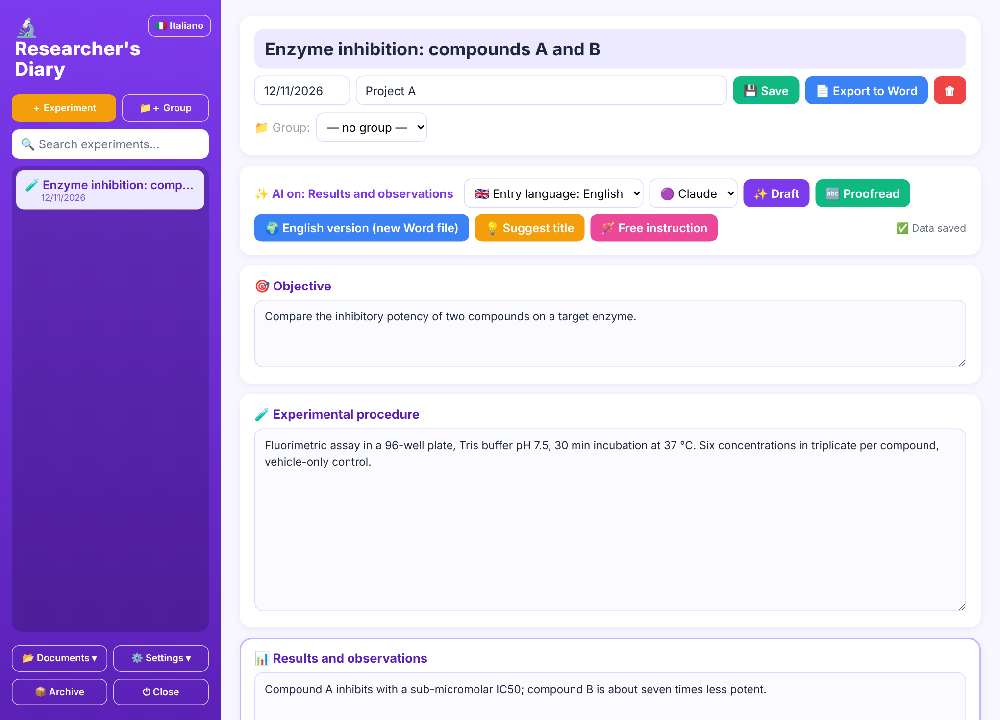
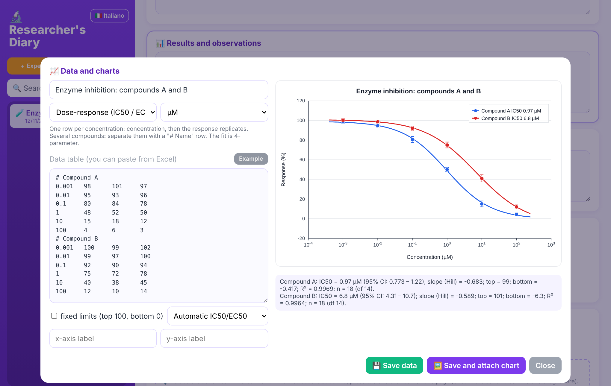
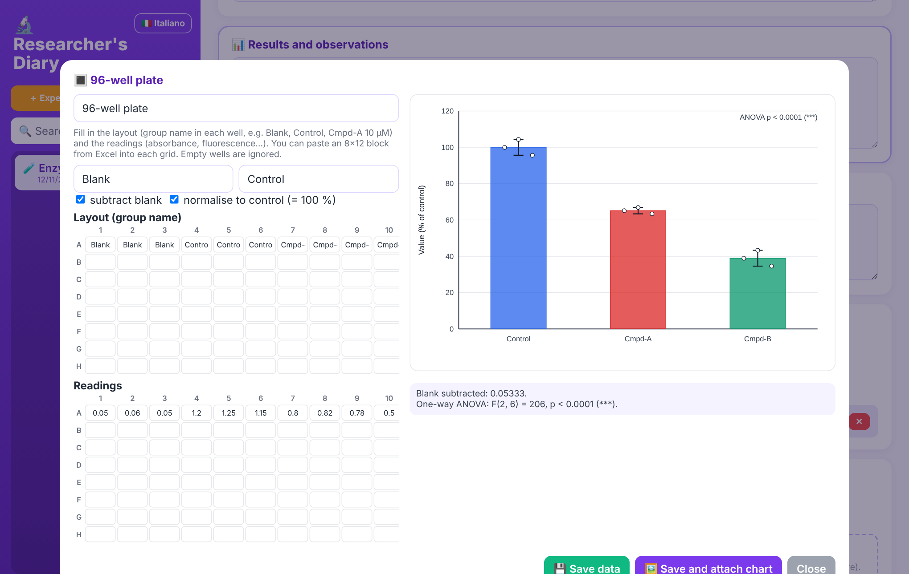
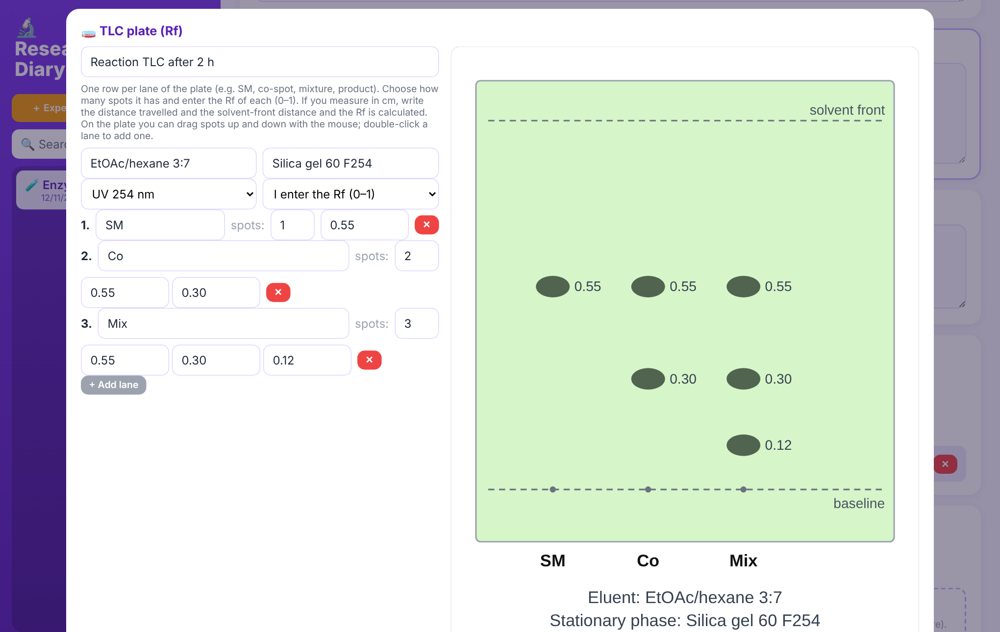

An experiment that doesn't work is still data.
Sci-Fail is the platform, in development, where researchers publish what did not work, so nobody else has to repeat it. Meanwhile, here is the Researcher's Diary: the free tool for documenting your experiments every day.

Why Sci-Fail
Papers report almost only the experiments that worked. Reactions that fail, assays that give no signal and antibodies that don't bind stay in lab notebooks, and other groups repeat the same mistakes.
Less repeated work
Knowing what has already been tried, and under which conditions, saves time, reagents and funding.
Complete, structured data
Conditions, structures, curves and the reason for the failure in a searchable format, not in a PDF.
For researchers and for those who fund them
Universities and companies can base decisions on what did not work, too.
The Researcher's Diary
A digital lab notebook that runs on your computer. Download it, start it and write: no account, no subscription.
- Sections and headings designed for your field
- Tables, curves and statistics ready to use
- Writing assistant (Claude or Gemini) that does not invent data
- A Word document for every experiment, created and updated automatically, in folders organised by group and subgroup
- A single document with all the experiments of a project, when you need it
- Write in your own language or in English; English version in a separate document with one click
- Interface in English or Italian
- ChemDraw attachments, molecule drawing and Google Drive sync
- Updates itself: when a new version is out it tells you and installs it
- Mac and Windows, open source (MIT licence)

A tool for every field
Choose your field at first start: the Diary shows the tools you need.
Synthetic chemistry
Reagents, equivalents and yields, TLC plates drawn with their Rf values, characterisation (NMR, MS, m.p.), molecule drawing and ChemDraw schemes.
Pharmacology and biochemistry
Dose-response with IC50/EC50 and confidence intervals, enzyme kinetics, assay sheet.
Molecular and cell biology
96-well plates, qPCR (ΔΔCt), cell lines and antibodies with lot numbers.
Microbiology
CFU counts, MIC, growth curves with doubling time.
Materials, physics, engineering
Measurements with fits (linear, polynomial, exponential, power law), process parameters and instruments.
Computer science and data
Tables of parameters and metrics, versions, seeds and environment for reproducibility.

Calculations you can check
Fits, confidence intervals and statistical tests have been compared with SciPy. The code is public: you can read it and verify it.
Built for the lab
Whoever supervises the work sees up-to-date documents, without having to ask anyone.
- For the supervisor: share the Google Drive folder and the Word files of the experiments update while the student writes
- Order: documents and attachments in the same group folders you see in the Diary
- TLC plates: choose the lanes, move the spots with the mouse, and the plate goes into the document
- End of project: all experiments in a single Word file, in date order

Download the Diary
Free and open source. Download, double-click and write.
🍎 Mac
- Unzip the file.
- Right-click
Avvia Diario.command→ Open (first time only; afterwards a double-click is enough). - The browser opens on the Diary and the Diario del Ricercatore icon appears on your Desktop: use that from now on.
If the Mac says you don't have permission to open the file: open Terminal, type chmod +x (with the space), drag Avvia Diario.command into the window and press Enter. Then repeat step 2.
🪟 Windows
- Unzip the file.
- Double-click
Avvia Diario.bat. If Python is missing it tries to install it by itself (a few minutes, once only); if it can't, it opens the download page. - The browser opens on the Diary and the Diario del Ricercatore shortcut appears on your Desktop.
If Windows warns that the file is not recognised: "More info" → "Run anyway".
The Diary opens in Italian: click 🇬🇧 English at the top left to switch the whole interface to English. It keeps running in the background: to switch it off use the "Close" button at the bottom left. When a new version is out a notice appears and it updates with one click.
Privacy: your experiments stay in a folder on your computer. At start-up the Diary checks GitHub for a new version (no data is sent). If you turn on the writing assistant, the selected text is sent to the service you choose (Claude or Gemini) with your personal key.
The Sci-Fail platform is coming
An archive where you can publish, anonymously if you wish, the experiments that did not work, with peer review and search by chemical structure. For now it is private: we are listening to researchers.
Notify me when it opens